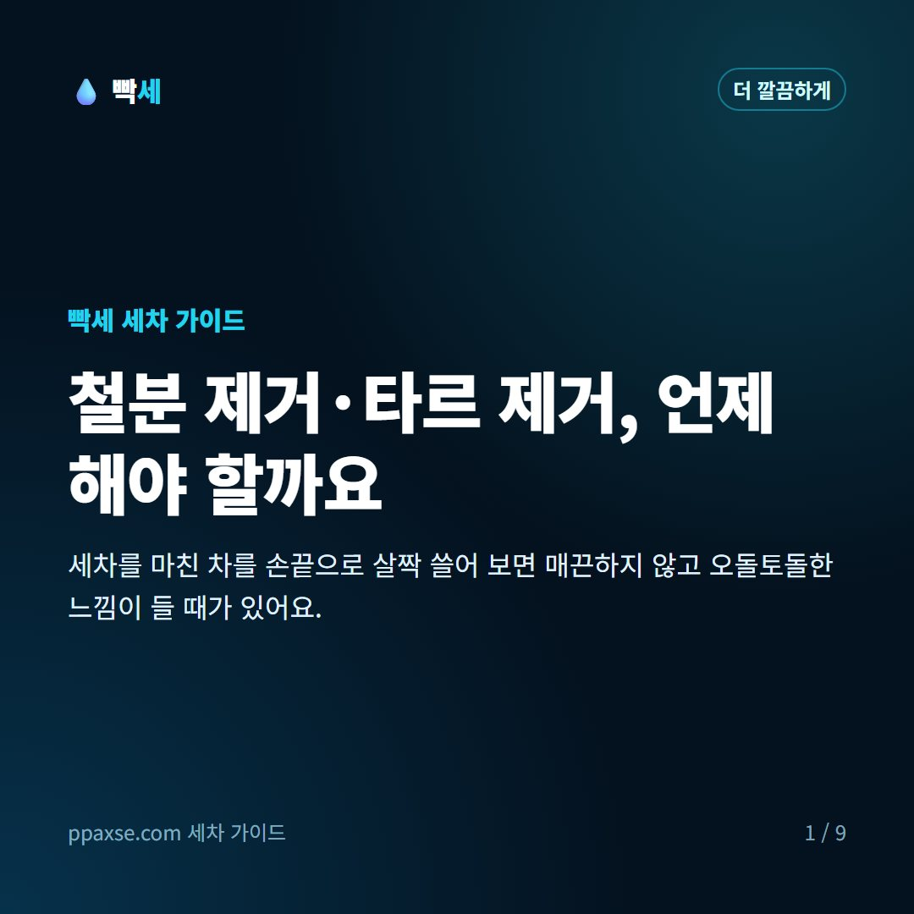
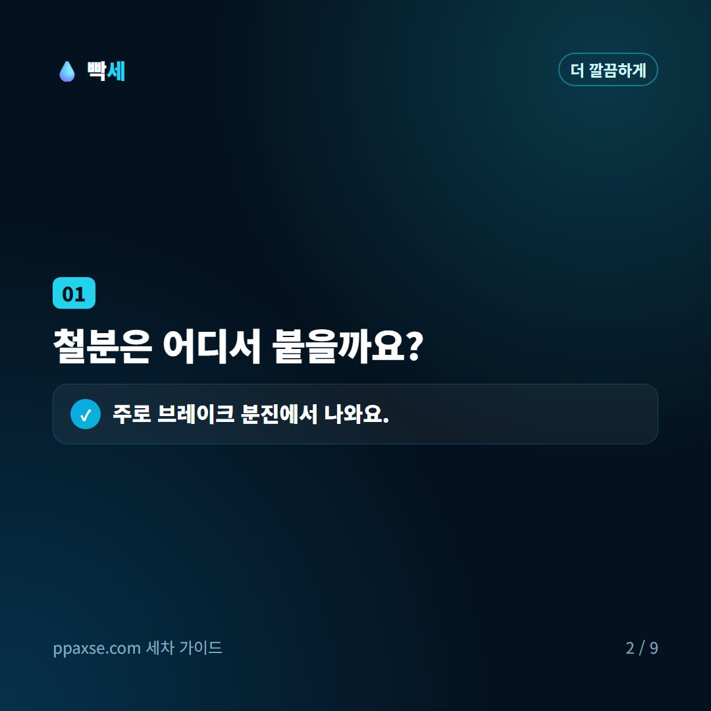
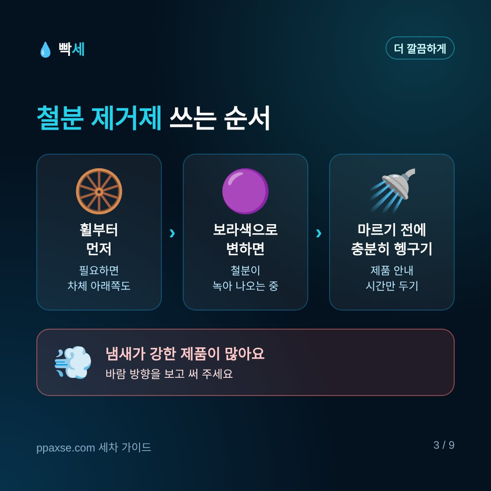
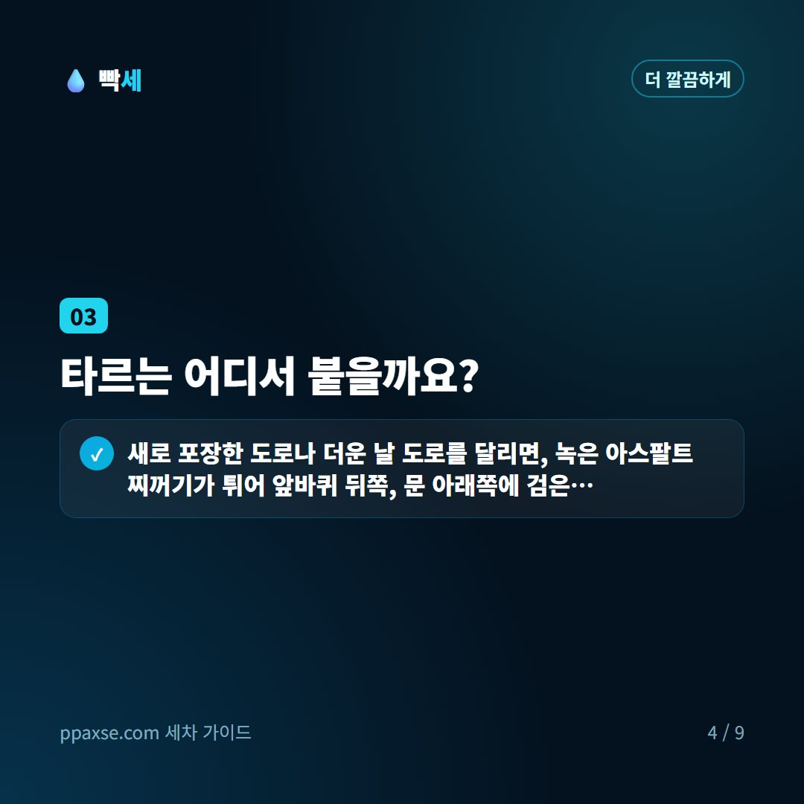
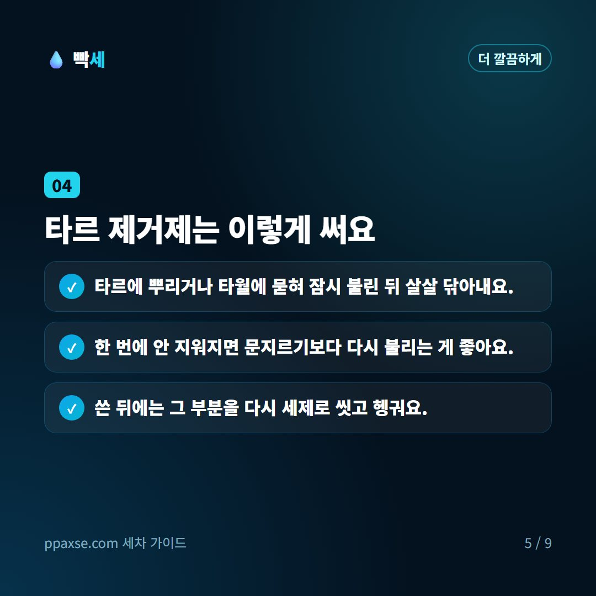
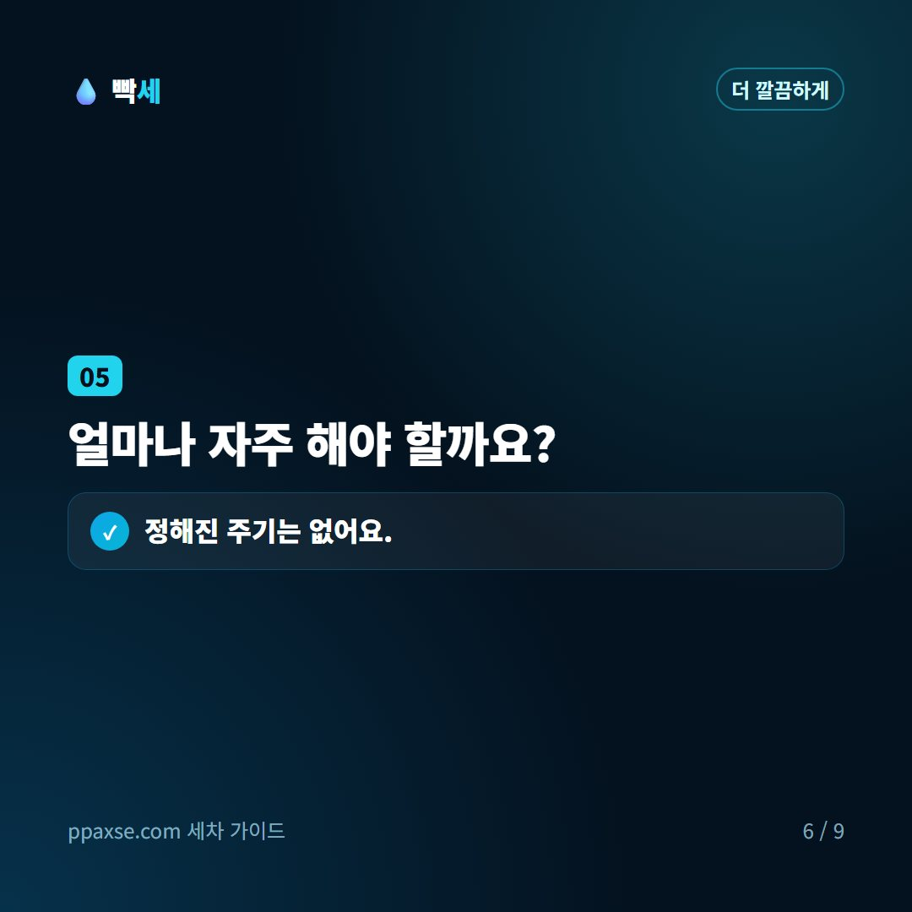
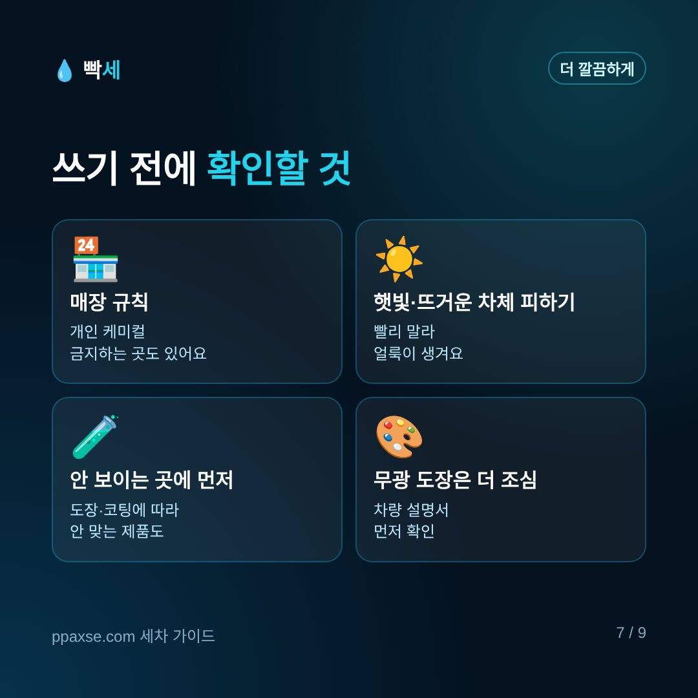

철분 제거·타르 제거, 언제 해야 할까요
세차를 마친 차를 손끝으로 살짝 쓸어 보면 매끈하지 않고 오돌토돌한 느낌이 들 때가 있어요. 일반 세차로는 잘 빠지지 않는 철분(쇳가루)이나 타르(아스팔트 찌꺼기)가 붙어 있을 수 있어요. 둘 다 전용 제거제가 있어서, 필요할 때 한 번씩 쓰는 분들이 많아요.

철분은 어디서 붙을까요?

주로 브레이크 분진에서 나와요. 브레이크를 밟을 때마다 생기는 아주 작은 쇳가루가 휠과 차체 아래쪽에 달라붙어요. 철길 근처나 공사장 주변을 다닐 때도 붙을 수 있어요. 오래 두면 휠이 누렇게 보이거나, 흰색 차에는 작은 갈색 점이 보이기도 해요.
철분 제거제는 이렇게 써요

- 뿌리고 잠시 두면 철분과 반응하면서 보라색으로 변하는 제품이 많아요. 색이 변하는 걸 보면 철분이 녹아 나오는 거예요.
- 제품 안내에 적힌 시간만 두고 마르기 전에 충분히 헹궈요.
- 특유의 냄새가 강한 제품이 많아요. 바람 방향을 보고 쓰는 게 좋아요.
- 휠 먼저 써 보고, 필요하면 차체 아래쪽에도 쓰는 분들이 많아요.
타르는 어디서 붙을까요?

새로 포장한 도로나 더운 날 도로를 달리면, 녹은 아스팔트 찌꺼기가 튀어 앞바퀴 뒤쪽, 문 아래쪽에 검은 점처럼 붙어요. 일반 세차로는 거의 안 지워지고, 손톱으로 긁으면 흠집이 날 수 있어요.
타르 제거제는 이렇게 써요

- 타르에 뿌리거나 타월에 묻혀 잠시 불린 뒤 살살 닦아내요.
- 한 번에 안 지워지면 문지르기보다 다시 불리는 게 좋아요.
- 쓴 뒤에는 그 부분을 다시 세제로 씻고 헹궈요.
얼마나 자주 해야 할까요?

정해진 주기는 없어요. 운전 습관, 다니는 길, 차 색깔에 따라 다르거든요. 세차 후 손끝으로 쓸어 봤을 때 거칠거나, 눈에 점이 보일 때 하는 분들이 많아요. 코팅이나 왁스를 새로 하기 전에 바탕을 정리하는 용도로 쓰기도 해요.
쓰기 전에 확인할 것

- 세차장에서 개인 케미컬을 써도 되는지 먼저 확인해 주세요. 금지하는 곳도 있어요.
- 햇빛 아래, 뜨거운 차체에서는 쓰지 않는 게 좋아요. 빨리 말라 얼룩이 생길 수 있어요.
- 도장 상태나 코팅 종류에 따라 맞지 않는 제품도 있어요. 처음엔 눈에 안 띄는 곳에 먼저 써 보세요.
개인 케미컬 되는 세차장 찾기
철분 제거제처럼 냄새가 강한 케미컬은 세차장마다 허용 여부가 달라요. 빡세 지도에서 다녀온 분들의 한마디를 보고, 나도 다녀오면 경험을 남겨 주세요. 지역별 목록은 지역별 세차장 모음에서 볼 수 있어요.
셀프세차·노터치·손세차를 종류별로 골라 보고, 폼건·온수·하부세차 같은 시설 정보도 확인할 수 있어요.
🗺️ 세차장 지도 열기✏️ 자주 가는 세차장에 한마디 남기기🎁 한마디를 남기면 가입 없이도 매주 기프티콘 추첨에 응모돼요.